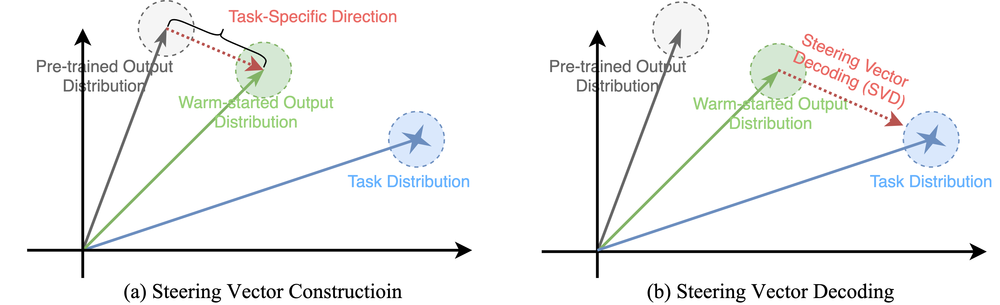

Contents
Abstract
Adapting billion-parameter language models to a downstream task is still costly, even with parameter-efficient fine-tuning (PEFT). We re-cast task adaptation as output-distribution alignment: the objective is to steer the output distribution toward the task distribution directly during decoding rather than indirectly through weight updates.
Building on this view, we introduce Steering Vector Decoding (SVDecode), a lightweight, PEFT-compatible, and theoretically grounded method. We start with a short warm-start fine-tune and extract a task-aware steering vector from the Kullback-Leibler (KL) divergence gradient between the output distribution of the warm-started and pre-trained models. This steering vector is then used to guide the decoding process. Across three tasks and nine benchmarks, SVDecode paired with standard PEFT methods improves multiple-choice accuracy by up to 5 percentage points and open-ended truthfulness by 2 percentage points without adding trainable parameters beyond the PEFT adapter.
Introduction: Why Chase the Weights?
Current adaptation methods (like LoRA or Prompt Tuning) adjust model weights in the hope that the output logits will follow the desired task distribution. However, this indirect approach has limitations:
- Training scales linearly with model size and data epochs.
- Weight updates can have unpredictable, non-local effects.
- Fixed hyperparameters often fail to transfer across domains.
Our Solution: We propose a shift in perspective. Instead of modifying weights, we align the model's output distribution directly during the decoding phase.
Methodology: Steering Vector Decoding (SVDecode)

Step 1: Steering Vector Construction
We capture the "task-specific direction" by computing the gradient of the KL divergence between the warm-started model (\(P_\phi\)) and the pre-trained model (\(P_\theta\)). We project this into logit space to create a task-aware steering vector \(\delta_{logits}\):
To ensure stability, we apply a confidence-aware constraint, filtering out low-confidence tokens that might introduce noise.
Step 2: Theoretically Optimal Steering Strength
Unlike heuristics, we derive a globally optimal steering strength \(\mu^*\) using a Newton-step approximation. We prove that SVDecode is first-order equivalent to a gradient step of full fine-tuning:
This allows us to analytically solve for the best steering intensity for a given task.
Experimental Results
We evaluated SVDecode on TruthfulQA (Multiple Choice & Generation) and 8 Commonsense Reasoning datasets (BoolQ, PIQA, etc.) using Qwen2.5 and LLaMA-3 models.
- Consistent Gains: SVDecode improves performance across all tested PEFT methods (LoRA, IA3, Prompt Tuning, P-Tuning v2).
- High Impact: On Qwen2.5-7B, adding SVDecode to Prompt Tuning increases TruthfulQA MC2 accuracy from 45.49% to 50.29%.
- Better Generation: Improves open-ended truthfulness and informativeness scores significantly.
| Model | Method | Multiple-Choice (%) | Open-Ended Generation (%) | ||||||
|---|---|---|---|---|---|---|---|---|---|
| MC1 ↑ | MC2 ↑ | MC3 ↑ | Avg. ↑ | %Truth ↑ | %Info ↑ | %T*I ↑ | Avg. ↑ | ||
| Qwen2.5-1.5B | Prompt Tuning | 29.88 | 43.02 | 19.22 | 30.71 | 28.04 | 32.32 | 24.39 | 28.25 |
| + SVDecode | 28.66 | 44.47 | 21.79 | 31.64 | 28.66 | 33.70 | 25.34 | 29.23 | |
| IA3 | 40.85 | 47.28 | 27.51 | 38.55 | 32.31 | 32.93 | 28.65 | 31.30 | |
| + SVDecode | 42.19 | 55.67 | 34.04 | 43.97 | 34.15 | 33.87 | 29.87 | 32.63 | |
| P-Tuning v2 | 33.54 | 45.28 | 23.45 | 34.09 | 31.70 | 33.53 | 27.44 | 30.89 | |
| + SVDecode | 33.54 | 48.41 | 25.96 | 35.97 | 32.32 | 32.32 | 28.05 | 30.90 | |
| LoRA | 50.61 | 55.55 | 34.81 | 46.99 | 49.39 | 43.90 | 40.85 | 44.71 | |
| + SVDecode | 52.94 | 61.41 | 34.95 | 49.77 | 50.00 | 44.52 | 42.68 | 45.73 | |
| Qwen2.5-7B | Prompt Tuning | 51.95 | 49.34 | 35.17 | 45.49 | 64.02 | 62.19 | 56.10 | 60.77 |
| + SVDecode | 53.25 | 62.16 | 35.45 | 50.29 | 65.24 | 62.80 | 57.92 | 61.99 | |
| IA3 | 47.56 | 50.36 | 31.89 | 43.27 | 52.44 | 55.48 | 48.78 | 52.23 | |
| + SVDecode | 46.07 | 57.04 | 31.99 | 45.03 | 54.26 | 55.48 | 50.00 | 53.25 | |
| P-Tuning v2 | 46.95 | 50.23 | 33.08 | 43.42 | 62.19 | 67.07 | 59.14 | 62.80 | |
| + SVDecode | 48.78 | 59.35 | 35.09 | 47.74 | 64.63 | 67.68 | 60.97 | 64.43 | |
| LoRA | 49.39 | 51.31 | 32.82 | 44.51 | 54.89 | 49.39 | 46.34 | 50.21 | |
| + SVDecode | 50.61 | 58.33 | 34.47 | 47.80 | 55.48 | 50.61 | 46.95 | 51.01 | |
| LLaMA3.1-8B | Prompt Tuning | 35.37 | 43.11 | 22.43 | 33.64 | 36.58 | 32.32 | 28.55 | 32.48 |
| + SVDecode | 29.61 | 55.06 | 30.64 | 38.44 | 37.90 | 33.54 | 28.66 | 33.37 | |
| IA3 | 34.76 | 45.83 | 24.85 | 35.15 | 43.90 | 47.56 | 39.63 | 43.70 | |
| + SVDecode | 30.49 | 54.73 | 31.89 | 39.04 | 44.51 | 46.95 | 40.23 | 43.90 | |
| P-Tuning v2 | 38.41 | 46.14 | 25.91 | 36.82 | 48.17 | 48.78 | 42.07 | 46.34 | |
| + SVDecode | 31.71 | 49.52 | 25.97 | 35.73 | 48.78 | 50.12 | 43.68 | 47.53 | |
| LoRA | 46.34 | 49.12 | 33.20 | 42.89 | 51.21 | 44.51 | 41.63 | 45.78 | |
| + SVDecode | 48.17 | 60.17 | 35.07 | 47.80 | 51.82 | 45.12 | 42.68 | 46.54 | |
Citation
If you find our work useful for your research, please consider citing our NeurIPS 2025 paper: